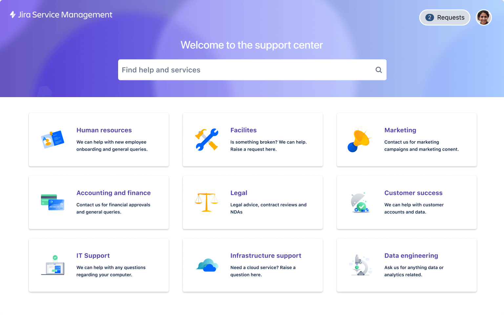

Enterprise service management
Teams across the organization from HR, facilities, legal, and more can easily spin up a service desk and standardize the way they work using Jira Service Management’s flexible and easy-to-use solution.
Explore ESM in Jira Service Management